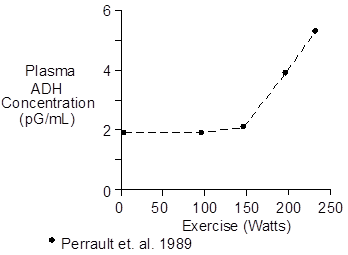
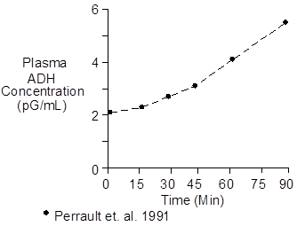

Exercise > Antidiuretic Hormone
Antidiuretic hormone is also known as vasopressin and arginine vasopressin in humans.
Plasma antidiuretic hormone concentration increases in severe exercise and in moderate exercise of long duration. Changes in mild exercise are small.
The data shown below were collected during recumbent cycling.

The data shown below were collected during upright cycling at 67% of maximum O2 uptake.

 Chemistry
Chemistry
The structure of antidiuretic hormone is
Cys-Tyr-Phe-Gln-Asn-Cys-Pro-Arg-Gly-NH2
This structure is conserved across many species, with proline being substituted for arginine at position eight – hence the naming convention. Molecular weight is 1084. Composition is C46H65N15O12S2.
Vasopressin concentration in plasma is typically 2.0 pG/mL.
Units
The prefix femto is sometimes used to describe vasopressin mass and concentration. Femto is 10-15. while pico is 10-12.
The following three amounts of vasopressin are equal
1 fMol
1.084 pG
0.434 ?U.
References
Perrault, H., M. Cantin, G. Thibault, G.R. Brisson, G. Brisson and M. Beland. Plasma atrial natriuretic peptide during brief upright and supine exercise in humans. J. Appl. Physiol. 66:2159-2167, 1989.
Perrault, H., M. Cantin, G. Thibault, G.R. Brisson, G. Brisson and M. Beland. Plasma atriopeptin response to prolonged cycling in humans. J. Appl. Physiol. 70:979-987, 1991.